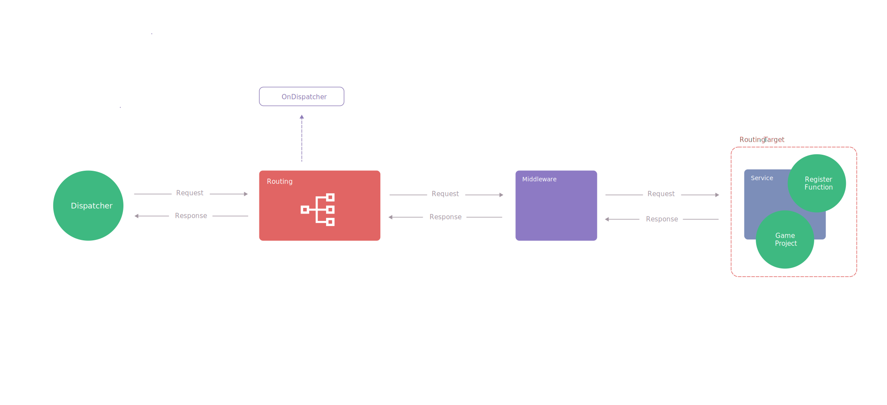

路由
CatLib路由系统可以赋予您通过一个uri调度到指定功能的能力。
基础概念
基本构成
CatLib路由系统由路由器，特性路由，路由条目，路由编译器，路由组组成。
路由器负责整个路由系统的调度
路由条目是路由系统中的基本单位，她确定了具体的一条路由及路由的目标。
路由组则是一个群体范围，一个路由组内部可以有多个路由条目，反之一个路由条目也可以拥有多个路由组。
特性路由是路由系统的扩展，允许开发者以特性的形式对路由目标方法进行标记后对标记的路由方法进行调度。
路由编译器用于编译路由条目。编译后的路由条目可以被路由器使用。
名词解释
调度一个方法，通过路由的方式调用被路由的方法。
使用场景
- (客户端,服务器)通过URI控制客户端切换UI，场景等。
- 允许拦截UI，场景跳转过程，处理客户端埋点等逻辑。
- 跨组件API调用，允许参数传递与解析，并通过控制反转来做组件解耦。
- Debug调试指令控制
路由架构图

初始配置
初始配置必须在框架初始化前完成配置，下面是路由组件需要的初始配置：
| 配置名 | 是否必须 | 配置描述(可以点击查看详细) |
|---|---|---|
RoutingProvider.DefaultScheme |
否 | 默认的Scheme |
RoutingProvider.CompilerAssembly |
否 | 路由编译时参与编译的程序集 |
合法的URI
符合下面RFC定义的URI均是合法的URI，都可以被CatLib路由系统解析：
基础注册
注册一个基本路由只需要一个url与一个lambda, 如果您没有定义uri的scheme那么将会使用默认值:
// 如果您使用的是 CatLib Framework 这段代码已经内置在框架内了 |
Router.Instance.Reg("main", (request, response) => |
特性路由注册
CatLib还允许您为类添加路由标记[Routed]来进行特性路由,注意被路由的类必须标记为[Routed],且需要在路由方法上也标记[Routed],同时保证方法访问级别为public：
[] |
Router.Instance.Dispatch("catlib://attr-routing/call"); |
必选路由参数
有时，我们需要在路由中捕获一些url的片段。例如，如果我们需要从url中捕获访问道具详细界面时的道具id,我们可以这样定义路由参数：
Router.Instance.Reg("props-detail/{id}", (request, response) => |
您也可以根据需要定义多个参数：
Router.Instance.Reg("bag/{type}/{sub_type}", (request, response) => |
路由参数通常都会被放在{}内，并且参数名只能为：a-z、A-Z、0-9,以及_。
注意，路由参数不能包含
-字符。请使用_替换。
可选的路由参数
您也可以指定路由参数为可选参数，如果需要将参数指定为可选参数，可以在参数末尾加上?实现。
Router.Instance.Reg("character/{tag?}", (request, response) => |
如果tag没有匹配到合适参数，那么将会使用默认值。
路由调度
如果要调用一个已经注册的路由，您可以使用Dispatch()方法。方法接受一个uri和上下文
IResponse response = Router.Instance.Dispatch("character/10" , "hello world"); |
隐式参数注入
CatLib路由系统具备将路由参数名绑定至函数变量的能力。
Router.Instance.Reg("ui://item/{id}", (int id) => |
可变参数注入
可变参数注入是隐式参数注入的升级，如隐式参数注入的例子所述，在常规开发中每次都需要使用Id来置换具体的道具实现这将会变得非常繁琐，所以CatLib路由系统支持了可变参数，将会自动将注入的简单类型变换为一个复杂类型。
class Item : IVariant |
Router.Instance.Reg("ui://item/{id}", (Item item) => |
参数正则约束
您可以使用Where()来约束您的路由参数的格式，Where()方法接受参数名和定义的参数约束的正则表达式。
Router.Instance.Reg("character/{tag?}", (request, response) => |
参数默认值
如果您定义了可选路由，那么当没有匹配到对应参数时，我们往往需要一个默认值。您可以通过Defaults()方法来为一个参数设定默认值。
Router.Instance.Reg("character/{tag?}", (request, response) => |
路由组
路由组允许您共享路由的特性，可以被共享的特性有：参数默认值，参数正则约束,处理中间件,路由异常中间件。
Router.Instance.Group(()=> |
关联多个路由组
一个路由条目可以关系多个路由组，您可以通过给定路由组的名字来设定。
IGroup group1 = Router.Instance.Group("group1"); |
注意，一般情况下我们不建议对多个路由组进行关联，这会导致问题变得复杂化，如果需要使用请提前做好规划。
主编译过程
得到一条可以被使用的有效路由条目，CatLib在内部已经做了大量的工作。路由条目一般会进行2次编译，编译如下：
特性路由编译 => 条目特征编译
特性路由编译在框架启动时就会进行，而条目特征编译则会等到用到路由条目时再进行编译。
特性路由编译过程
CatLib路由编译器会在框架启动时扫描被特性路由标记的类，并将其解析成对应的路由条目（编译过程中，为不覆盖设定参数），执行流程如下：
扫描所有被标记路由的类解析类中所有被标记路由的方法编译方法Where约束编译方法Defaults默认值编译方法Group组
编译类Where约束编译类Defaults约束编译类Group组
特性路由配置
如果您使用特性路由，如果想要在特性路由中表达路由的特性，那么可以这么做：
[] |
特性路由的配置是使用=>和,进行区分的。参数1名=>参数1值,参数2名=>参数2值。
上述我们为AttrRouting这个类下的所有特性路由定义了2个默认值：type 和 tag，其值分别为1和2。同时也定义了参数正则约束。
在方法Call中我们定义了方法的特性路由默认值type。根据特性路由编译过程所以最终生效的默认值的将是0。
特性路由Scheme
特性路由可以通过给定绝对地址的方式来定义Scheme
[] |
Router.Instance.Dispatch("ui://main/call"); |
上述代码以绝对地址的形式定义了特性路由，这样编译时将不会使用默认的Scheme。
什么是路由中间件
路由中间件允许拦截，修改路由请求及响应，中间件将会按照顺序依次执行。
路由中间件在宏观面上分为：全局中间件 ， 类中间件 ，路由条目中间件 , 中间件的执行流程为：
(调度入口) 全局中间件 => 类中间件 => 路由条目中间件 => 目标路由方法
(调度出口) 全局中间件 <= 类中间件 <= 路由条目中间件 <= 目标路由方法
全局中间件，类中间件和路由条目中间件为不同的过滤器链池所以她们之间的优先级不产生影响。
路由条目中间件
路由条目中间件属于路由条目中间件的过滤器链池。
路由条目中间件能够为当前路由条目设定中间件，它可以指定具体的路由执行指定的中间件。
Router.Instance.Reg("character/{type?}", (request, response) => |
路由组中间件
路由组中间件属于路由条目中间件的过滤器链池。
路由组中间件将对所有组内的路由生效。
Router.Instance.Group(()=> |
类中间件
类中间件属于类中间件的过滤器链池。
通过特性路由的方式和类注册方式，将允许您设定类的中间件接口：IMiddleware;
[] |
如果您的路由标记类中设定了中间件接口，那么在调度到当前类下的路由方法时将会经过设定的中间件。
全局中间件
全局中间件属于全局中间件的过滤器链池。
全局中间件会对所有调度的路由条目进行处理。
Router.Instance.Middleware((request,response,next)=> |
无法找到路由条目
CatLib路由系统允许您使用中间件的方式来处理NotFoundRouteException（无法找到可以被使用的路由条目）。
Router.Instance.OnNotFound((request , next)=> |
您可以传入一个优先级来决定哪个处理方案被优先执行，这在终止冒泡时非常有用。
异常处理
在执行目标方法时，可能会引发某些异常，所以我们需要进行异常处理。
CatLib的路由异常处理系统在触发异常时会冒泡处理各级异常处理链，异常处理被分为：全局异常处理和局部异常处理，同中间件一样，她们的过滤器链池是不同的。
异常处理总是从局部开始的，CatLib的异常处理器会依次调用异常处理函数，逐层冒泡执行（如果冒泡被终止那么后续异常抛出也会被终止）。
触发异常 => 局部异常处理 => 全局异常处理 => Dispatch()抛出异常
请注意
递归路由调度的时的异常处理。
路由条目的异常处理
路由条目的异常处理属于局部异常处理。
Router.Instance.Reg("character/{type?}", (request, response) => |
路由组的异常处理
路由条目的异常处理属于局部异常处理。
Router.Instance.Group(()=> |
全局异常处理
路由条目的异常处理属于全局异常处理。
Router.Instance.OnError((request,response,ex,next) => |
递归路由调度
CatLib路由系统已经对递归调用做了良好的支持，您可以安全的进行递归调用。
递归路由调度时异常处理的流程
假设我们进行了一次递归调用,异常将会按照如下流程触发：
触发异常 => 局部异常处理(嵌套的Dispatch("ui://call2")) => 全局异常处理 => 局部异常处理(ui://call) => 全局异常处理 => Dispatch()抛出异常
Router.Instance.Reg("ui://call" , (request,response)=> |
修改默认的Scheme
CatLib路由系统的默认Scheme为catlib。但您可以通过SetDefaultScheme()来修改默认的Scheme。
Router.Instance.SetDefaultScheme("home"); |
路由编译剥离
CatLib路由系统在在编译时会剥离掉不必要扫描的程序集。
下面的程序集在编译时不会被剥离：
- Assembly-CSharp
- Assembly-CSharp-Editor-firstpass
- Assembly-CSharp-Editor
- CatLib
- CatLib.Tests
您可以通过配置:routing.stripping.reserved来填写不要被剥离的程序集，使用;分隔程序集。
路由自动命名
使用特性路由时，如果您没有给定路由uri那么将会使用路由自动命名机制。
[] |
自动命名的规则是：根据类名或函数名转为全小写，单词之间用-进行分割的字符串,连续的大写视为一个单词。
上述路由将会被转化为：catlib://attr-routing/call和catlib://attr-routing/call-npc。
自动路由注入
使用特性路由时您可以使用自动参数注入来获取需要的参数。CatLib容器会自动解析并注入需求参数。
其中IRequest和 IResponse类型为当前路由的请求和响应。
[] |
性能优化相关
CatLib 路由系统是一个复杂的系统，您不应该使用在高性能需求的地方或者频繁调用。
我们给出了下面几种优化方案：
- 为不同的类型的路由目标定义不同的Scheme
- 降低约束的复杂度
- 使用手动注册的路由